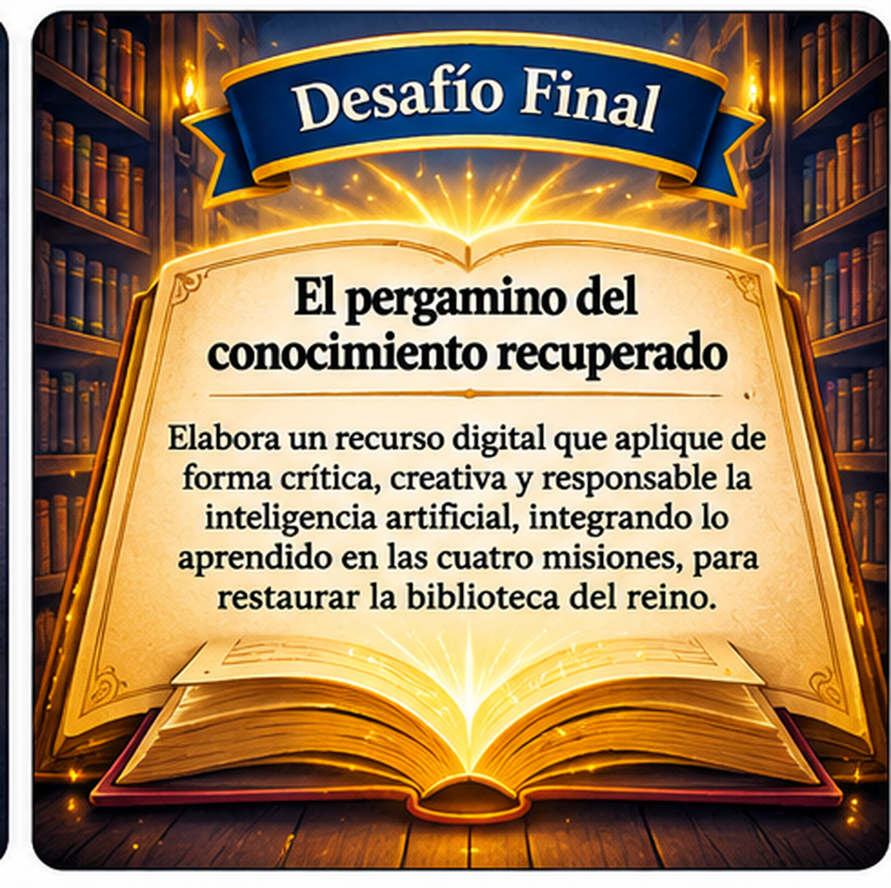

Aprendiz: has aprendido a reconocer la inteligencia artificial, comunicarte con el Oráculo Real y verificar sus respuestas. Ha llegado el momento de reunir esos saberes y convertirlos en una creación propia que ayude a otros habitantes del reino a aprender con criterio.
Tu desafío será elaborar una infografía digital sobre un uso útil y responsable de la inteligencia artificial en el estudio o la vida cotidiana.
Una infografía individual titulada «El pergamino del conocimiento recuperado», en la que explicarás cómo utilizar la inteligencia artificial para aprender, investigar o resolver una situación cercana, sin aceptar sus respuestas sin revisarlas.
Tu infografía debe tener un mensaje principal, información breve y organizada, al menos un ejemplo, recomendaciones de uso responsable y fuentes consultadas.

Elige una situación escolar o cotidiana y define qué deseas comunicar.
Prepara un prompt y solicita ideas o explicaciones con apoyo del docente.
Contrasta los datos importantes con fuentes confiables y corrige lo necesario.
Diseña la infografía, revisa su claridad y entrégala como evidencia final.
Una buena infografía no contiene mucho texto: presenta una idea central y la organiza en bloques breves. Utiliza como guía los cuatro componentes siguientes.
Describe cómo la IA puede apoyar una actividad concreta: comprender un tema, practicar, organizar información o generar ideas.
Incluye un prompt que muestre objetivo, contexto y resultado esperado. Así se verá cómo orientaste al Oráculo Real.
Señala qué dato comprobaste, dónde lo contrastaste y qué corregiste o confirmaste.
Incluye consejos sobre privacidad, revisión crítica, reconocimiento del uso de IA y elaboración propia.
Actúa como un tutor de Computación para estudiantes de tercero de secundaria. Explica tres formas de utilizar la inteligencia artificial para estudiar, incluye un ejemplo para cada una y dos recomendaciones para verificar la información. Organiza la respuesta en una tabla breve y utiliza lenguaje claro.
Recuerda: el docente puede gestionar la consulta al Oráculo Real y mostrar su respuesta. Tú decides qué información conservar, cómo verificarla y cómo explicarla con tus propias palabras.
Utiliza el Taller de infografías del Reino, una herramienta integrada en esta misión. Completa los campos, revisa la vista previa y descarga tu creación como imagen PNG. No necesitas instalar programas, crear una cuenta ni iniciar sesión.
Guarda el archivo descargado y entrégalo junto con la ficha de evidencia. La imagen se genera en tu navegador.
Completa esta ficha y adjunta o entrega la infografía que elaboraste. Puedes imprimirla o guardarla como PDF desde tu navegador.
No incluyas contraseñas, direcciones, números de documento ni datos personales sensibles en tu infografía o en tus consultas a herramientas digitales.
Has reunido los cuatro fragmentos del conocimiento. Cada misión aportó una habilidad necesaria para recuperar la sabiduría del reino:
Tu infografía será el último aporte para reconstruir la biblioteca del reino.
Esta insignia reconoce la integración de los aprendizajes de las cuatro misiones. Su entrega se valida cuando el docente revisa la infografía y la ficha de evidencia.
Criterios para revisar el producto: propósito claro; contenido organizado y pertinente; prompt con objetivo, contexto y resultado esperado; información contrastada; recomendaciones de privacidad y uso responsable; diseño legible y fuentes identificables.
Nota de implementación: la actividad HTML, el taller de infografías y la ficha funcionan localmente, sin conexión a internet, sin cuentas y sin enviar las respuestas a un servidor. La participación directa de estudiantes en herramientas externas de IA no es necesaria: el docente puede gestionar las consultas y presentar las respuestas al grupo.